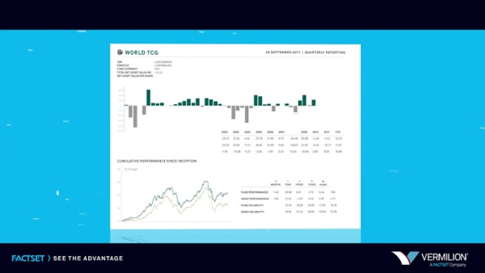

Experience
Detailed-oriented Sr. Technical Business analyst and Certified Scrum Master with experience managing development activities throughout software development life cycles and delivering operational excellence at the wealth management technology group, with specializes in Agile and waterfall project management, Business Analysis, and Quality Assurance.
Relevant Experience
- Senior Business Analyst, January 2018 - present
Manage development of client reporting platform enhancements and data validation.

- Business Analyst, January 2015 - December 2017
Provided end-to-end user supports and troubleshot technical issues.
- Technology associate, July 2011 - December 2014
Provided supports to business and technology team by documenting workflows and processing.
EDUCATION
- General Assembly — FEWD 2019
- Pennsylvania State University — B.S. 2011